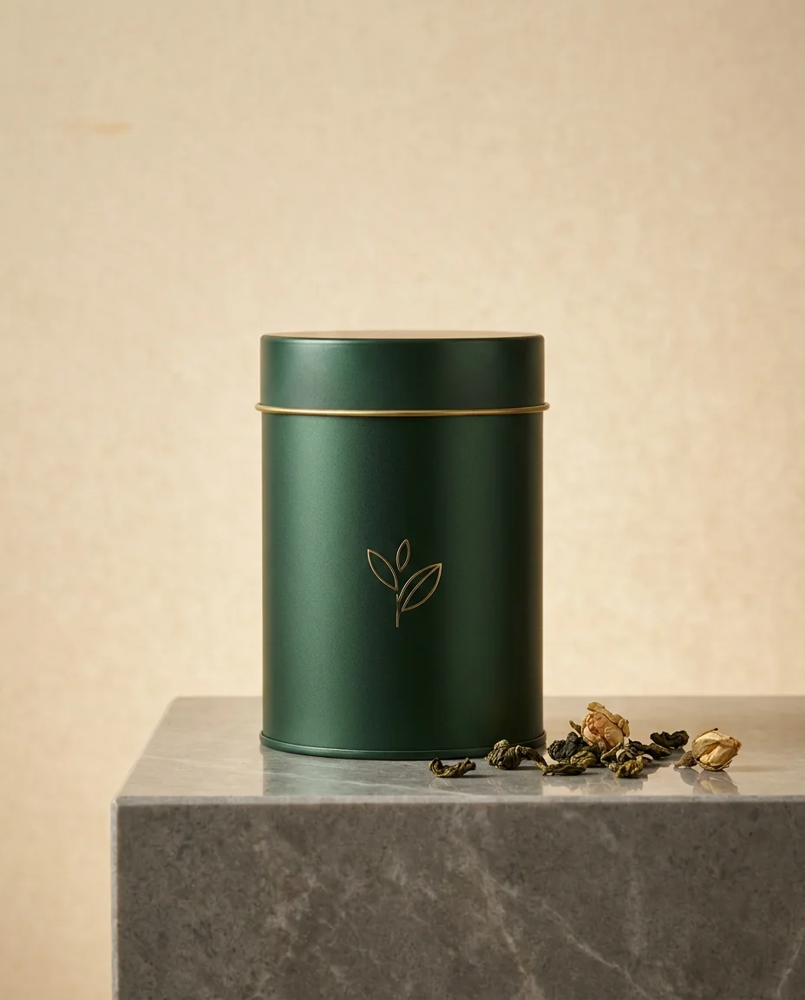

梨山 · 海拔 2,000m
梨山高山烏龍
NT$880
梨山是台灣海拔最高的茶區之一，終年雲霧繚繞、日夜溫差大。晨霧未散時手採一心二葉，當日萎凋，再以龍眼木炭慢焙定香。茶湯蜜綠透亮，入口花蜜香清揚，喉韻冷甜、回甘綿長。
花蜜香冷甜喉韻蜜綠湯色耐沖泡
充氮封罐鎖鮮 · 滿 NT$1,200 免運 · 7 天鑑賞期(未拆封)
品飲細節 · Details
關於這款茶
熱泡:置茶約 3 公克，以 95°C 熱水沖泡，第一泡 50 秒，之後每泡遞增 10–15 秒，可回沖 6–7 次。冷泡:茶水比 1:50,冷藏靜置 6–8 小時，清甜不澀。建議使用瓷器或蓋杯，更能襯出高山茶的清揚花香。
產區為台中和平梨山，海拔約 2,000 公尺。低溫使茶樹生長緩慢、葉肉肥厚，果膠與胺基酸含量高，因此茶湯甘甜、苦澀低。香氣以高山花蜜香為主軸，尾韻帶淡淡奶蜜與冷礦感。
請置於陰涼乾燥處，避免陽光直射與潮濕，遠離有異味的物品。開封後請盡快飲用完畢，並確實密封;若短期內喝不完，可冷藏保存，回溫後再開封以免反潮。
全館常溫宅配，通常 1–3 個工作天出貨。滿 NT$1,200 免運。未拆封商品享 7 天鑑賞期;茶葉為食品，拆封後恕不退換。詳情請見常見問題。
蜜綠湯色 · 冷甜回甘